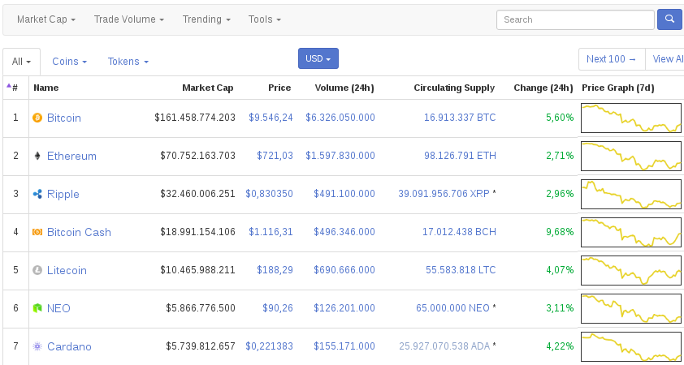

Obtener cotización de bitcoin de coinmarketcap con Python
Posted on Sun 11 March 2018 in Tutorial Python • 2 min read
Este artículo mostrará dos formas de obtener la cotización en tiempo real de Bitcoin del sitio coinmarketcap, la primera forma es usando la librería request, la segunda es utilizando una librería de python para acceder al API de Coinmarketcap.
Coinmarketcap es un sitio que muestra la capitalización de las distintas criptomonedas existentes en tiempo real, a continuación se muestra una captura de pantalla del sitio:

Este artículo se basa del artículo en Real Python "Python Project for Beginners: Bitcoin Price Notifications" y de la documentación de la librería coinmarketcap.
Para usar la librería de coinmarketcap primero se instalará vía pip3:
pip3 install coinmarketcap
A continuación se muestra el ejercicio de acceder a la API de coinmarketcap desde request y desde la librería que accede al API:
In [1]:
#Se importa la librería request
import requests
In [2]:
#Se guarda el url del api para bitcoin
bitcoin_api_url = 'https://api.coinmarketcap.com/v1/ticker/bitcoin/'
#Se guarda la consulta al url de bitcoin
respuesta = requests.get(bitcoin_api_url)
#Se obtiene el json de la respuesta
resp_json = respuesta.json()
In [3]:
#cual es el tipo de dato de resp_json
type(resp_json)
Out[3]:
list
In [4]:
#El tipo de datos de resp_json es una lista, se muestra el primer elemento de la lista
resp_json[0]
Out[4]:
{'24h_volume_usd': '6324610000.0',
'available_supply': '16913212.0',
'id': 'bitcoin',
'last_updated': '1520799265',
'market_cap_usd': '162063750441',
'max_supply': '21000000.0',
'name': 'Bitcoin',
'percent_change_1h': '-0.64',
'percent_change_24h': '5.74',
'percent_change_7d': '-15.57',
'price_btc': '1.0',
'price_usd': '9582.08',
'rank': '1',
'symbol': 'BTC',
'total_supply': '16913212.0'}
In [5]:
#Se tiene un json con los datos de la cotización actual de Bitcoin BTC.
In [6]:
#Ahora se usa la libreria coinmarketcap y la clase Market.
from coinmarketcap import Market
In [7]:
#Se crea la instancia de la clase
coinmarketcap = Market()
In [8]:
#Se obtiene la cotizacion de bitcoin
coinmarketcap.ticker("bitcoin")
Out[8]:
[{'24h_volume_usd': '6323720000.0',
'available_supply': '16913337.0',
'cached': False,
'id': 'bitcoin',
'last_updated': '1520799866',
'market_cap_usd': '161323467507',
'max_supply': '21000000.0',
'name': 'Bitcoin',
'percent_change_1h': '-1.11',
'percent_change_24h': '5.47',
'percent_change_7d': '-16.0',
'price_btc': '1.0',
'price_usd': '9538.24',
'rank': '1',
'symbol': 'BTC',
'total_supply': '16913337.0'}]
Se tienen dos formas de obtener la información del sitio coinmarketcap, una es usando request y otra la librería que accede directamente al API, queda de parte de uno cual es la mejor opción a usar.
¡Haz tu donativo! Si te gustó el artículo puedes realizar un donativo con Bitcoin (BTC) usando la billetera digital de tu preferencia a la siguiente dirección: 17MtNybhdkA9GV3UNS6BTwPcuhjXoPrSzV
O Escaneando el código QR desde la billetera: